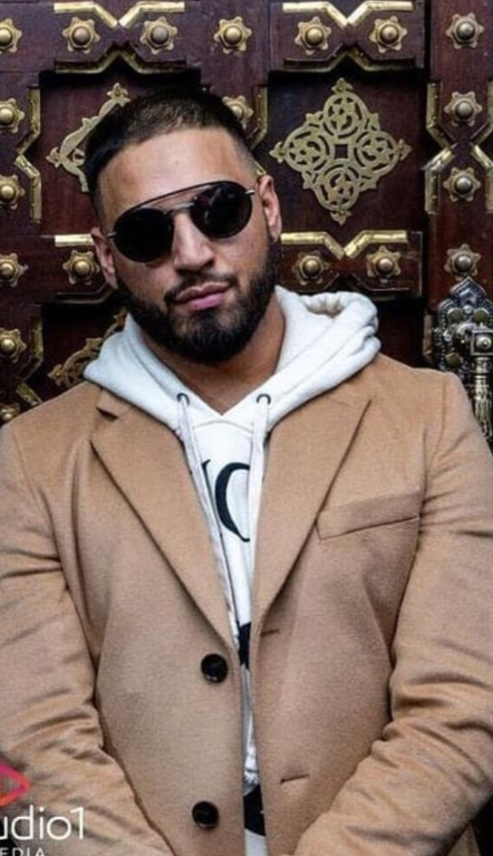
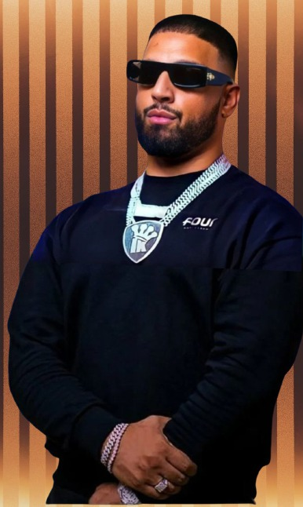
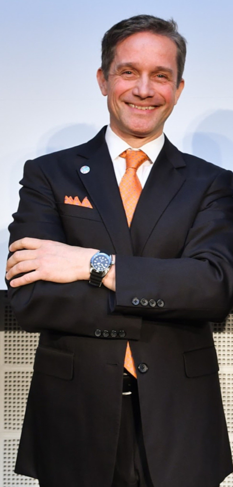
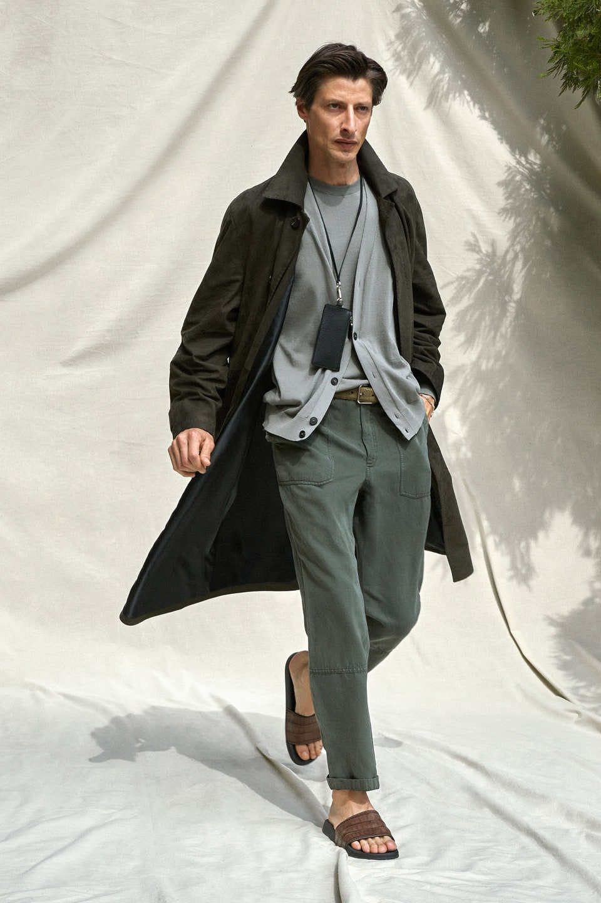

Air Jordan is an American brand of basketball shoes produced by American corporation Nike. The first Air Jordan shoe was produced for Hall of Fame former basketball player Michael Jordan and released to the public on April 1, 1985. The shoes were designed for Nike by Peter Moore, Tinker Hatfield, and Bruce Kilgore.


Boglioli is a men's tailoring family business originally based in the Italian town of Gambara, it was founded in 1974 as a family-run Italian business, Its showroom is at Via Tortona 31 in Milan, Its signature item of menswear is garment-dyed jackets and The president and CEO of the company is Giovanni Mannucci.
Since 2012 FOUR Amsterdam is the retail destination when it comes to menswear with a unique combination of streetwear, contemporary and luxury brands, Headquarters are in 9-11 Van Baerlestraat, Amsterdam, North Holland, 1071, Netherlands, Designers which we stock include Saint Laurent, Tom Ford, Raf Simons, Balenciaga, OFF-WHITE, Vetements, Givenchy and Maison Margiela

Seiko is a Japanese maker of watches, clocks, electronic devices, semiconductors, jewelry, and optical products. Founded in 1881 by Kintarō Hattori in Tokyo, Seiko introduced one of the first quartz watches, Seiko was a wristwatch manufacturer for Japanese soldiers during World War II.
Vogue, influential American fashion and lifestyle magazine. It was founded in 1892, created by Arthur Baldwin Turnure for New York City’s social elite and covering news of the local social scene,The British Vogue, launched in 1916, was the first international edition, while the Italian version Vogue Italia has been called the top fashion magazine in the world.The largest issue published by Vogue magazine was the September 2012 edition, containing 900 pages.
